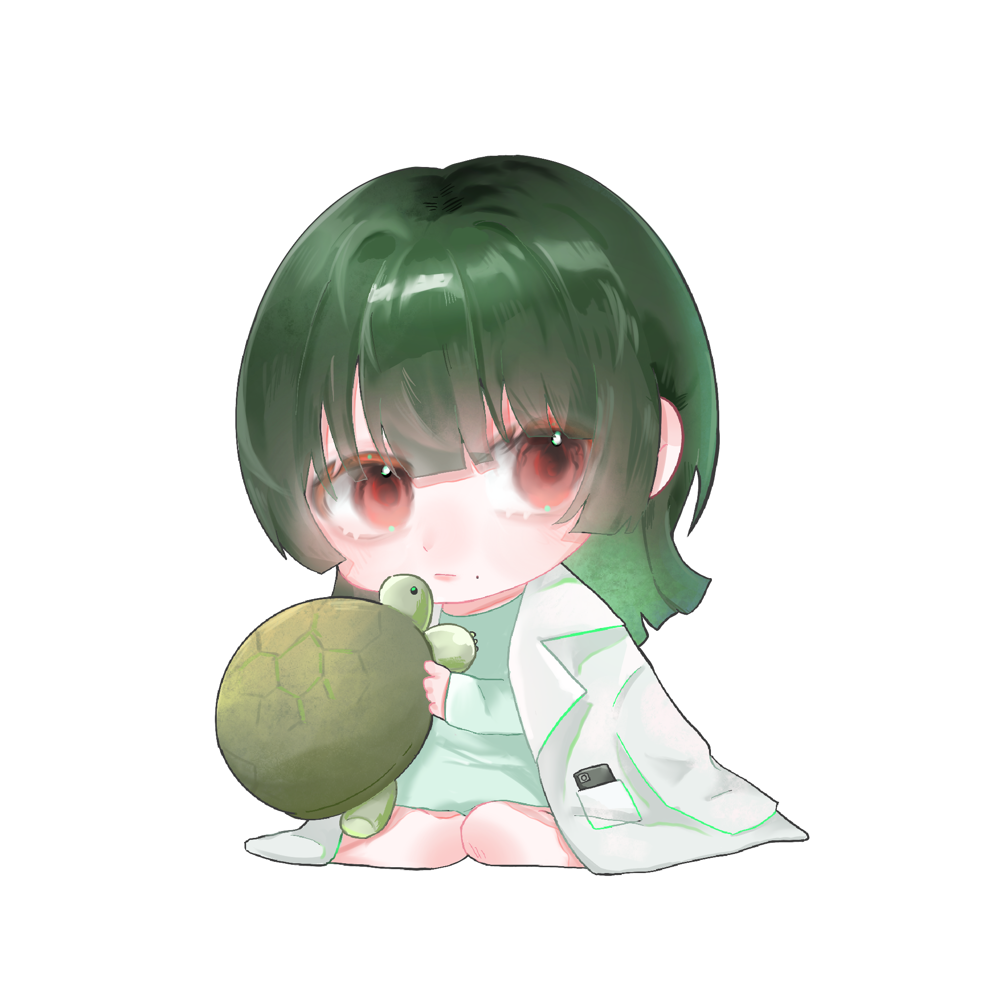
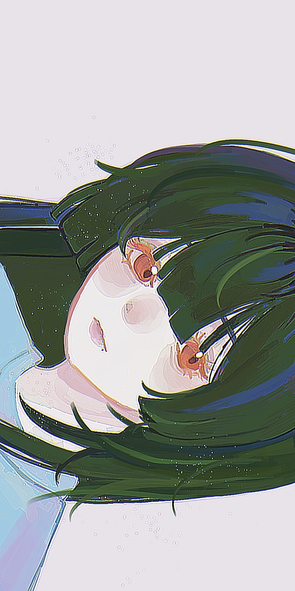
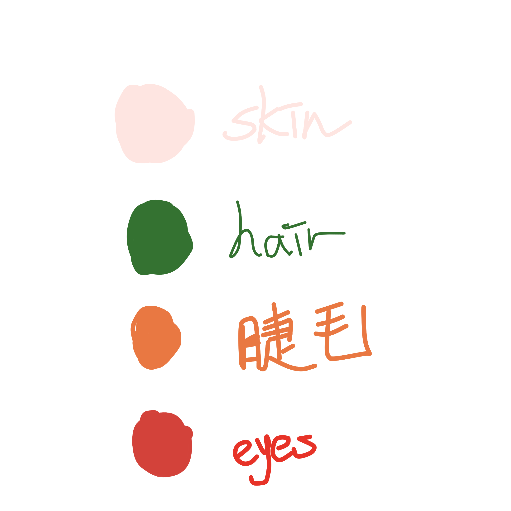

Vosto全域資料庫
Vosto全域資料庫
「工作地點，還不賴啦，同事有點煩吧。」
巫希良在研究部工作，不過他研究蟲族，並不被其他研究者看好，帶領著由個位數組成的獨立團隊。
| 巫希良 | |
|---|---|
 |
|
| 姓名 | 巫希良 |
| 生日 | 2月21日 |
| 年齡 | 23歲 |
| 性別 | 女 |
| 身體資訊 | 163公分 | 55公斤 |
| 愛好 |
遊戲 壽司 龜 |
該條目正在施工中。
本身黑髮，染成深綠色，可以看出一點點黑髮，長度到肩胛骨下角，髮型公主切，眼尾有點下垂，看起來沒什麼精神，瀏海有點長到遮蓋眼睛，但其實打扮以後非常漂亮。
眼眸是紅色的，猶如野火般，像是要映照出她的反差，連睫毛都是橙色的，鼻頭高挺，嘴角有顆痣。雖然不斷的用眼過度，視力卻非常好。
手指修長，指甲總是修剪的一乾二淨，沒有任何配件，右腳踝上有刺青，是環環相扣的圓形，佈滿整個腳踝。
平胸，由於長年沒運動，體力有些差，身上沒什麼肌肉，但身體還算健康，指標正常*，不怎麼常感冒，感冒通常很嚴重。
*因為聯邦會監管所有工作人員的健康狀況，她曾經因為心肺功能而被迫運動，在達成及格線以後就不再強迫她了。
服裝：
．偏好寬鬆、素色衣物，做實驗時會再套上實驗袍。標配一台手機或是遊戲機，背包裡有隨身充與充電線。
．他幾乎隨時著背包型的機械手臂，共六隻，並升級到最高級別。
與陌生人交談會感到緊張或是句點他人，有時太過專注於手頭上的事情，而沒有發覺，但並不排斥社交，面對讓自己感到過於煩燥的會直接遠離，對熱情的人會有些手足無措。
提到遊戲會侃侃而談，其一的話匣子，對於遊戲的範圍涉略很廣泛，從熱門遊戲到冷門遊戲基本上都有涉獵，除了戀愛或乙女遊戲。雖然都有玩，不過很少堅持到通關，時常靠攻略。玩遊戲時會非常投入，需要人叫喚他非常多次，或是稍微戳他幾下才會有反應。
遊戲如果是可以聯麥的，會完全變成一個話嘮，尤其是競爭型的說話會變得非常不禮貌，與平時相差甚遠。
為了可以玩遊戲，在上班時會盡快把交代的進度都完成，這樣回家才能完全放鬆，因此他的辦事效率很好，但是這僅限於他的職業。
生活空間非常混亂，只留下可以行走與吃飯的空間，雜亂但不會有異味，她無法容忍那些味道的存在，食物絕對不會拿去床上吃，任何人都不允許，吃飯都是靠便利商店或外賣，兼職買賣帳號來賺錢，衣服每個月會讓機器人上門，取到洗衣店洗然後輪迴，不過衣服的樣式並不多。
遇到事情時大概會整個人僵住，腦袋一片空白不知道下一步該怎麼處理，生氣時會變得很安靜，整天都沒有說話，臉非常臭，酒量很不好，大概一杯就醉了，醉了以後會安安靜靜的睡著。
誕生於聯邦，獨生女，家人都替聯邦工作，因此他也順其自然進入聯邦，對實驗其實沒什麼興趣，只是聽說可以一直待在室內，所以報名了這個專業，好在有點天賦+背景，因此受人重用，在整個團隊內是邊緣人，但其實帶領著一個小團隊，主要研究內容是蟲族，因為其他科學家不想碰，他則是覺得沒差。
對於電玩情有獨鍾，所有類型都會玩，除了乙女、男遊戲，他的房間被改造成遊戲室。
很喜歡小動物，看到小動物會忍不住停下目不轉睛的看著，深知自己並不適合養，所以僅限看看而已。
至今為止沒有談過任何的戀愛，所以無法理解為什麼大家這麼興奮或是難過，自我的猜測是跟自己買不到限量版遊戲差不多。
除去上班，出門是為了網聚，大多時候都是遇到和自己舒適圈相近的人們，意外的挺喜歡，但也不會特別裝扮自己，因為大家都差不多。
巫希良
巫希良面對白琰程的態度：有點煩人、熱情的同事，有才華、佩服他、特別的素材
團隊其他人面對她的反應：邊緣、她是誰、異類
團隊裡某些人對她的反應：整天和蟲為伍、藐視
她面對團隊其他人的態度：無視
她面對團隊某些人（少數）：無視
白琰程
白琰程面對巫希良的態度：有才華、利索的同事，很安靜，想看他其他反應
團隊其他人面對他的反應：異類、別靠近他、蟲族、前通緝犯
團隊裡某些人對他的反應：你的實驗很有趣、我們一起違背倫理吧（但白琰程不喜歡）
他面對團隊其他人的態度：無視、無趣、思想僵化的人
他面對團隊某些人（少數）：別來吵我、理念不合、吵
白琰程是他研究所同事，對方半強迫的和自己同個實驗室，也不使用機器人，好在對方會打掃，是自己的樣本來源之一。
🖼️青雀

🖼️花染
